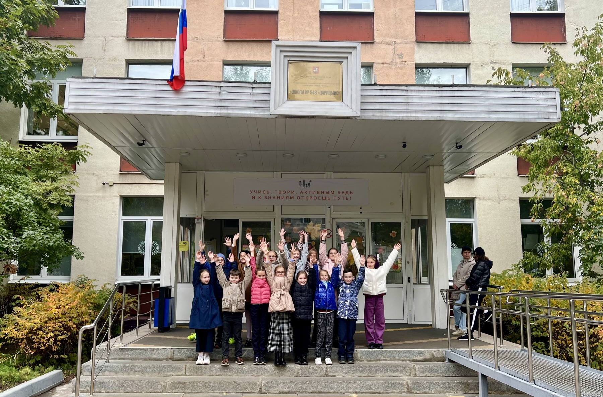

Страхов Евгений Александрович
Руководитель начальной школы
Москва, ул. Елецкая, д. 31, к. 2

Начальная школа для 1–4 классов. В здании есть два спортивных зала, актовый зал, библиотека, медицинский кабинет, кабинеты английского языка, музыки, ритмики, искусства и информатики.
Занятия начальной школы проходят по адресу: Москва, Елецкая улица, д. 31, к. 2.
Почтовый индекс: 115583.
Руководитель начальной школы
Приём посетителей: Вторник, 16:00–17:30. По предварительной записи.
+7 (980) 186-05-24